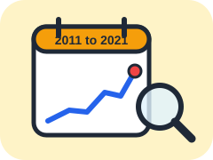
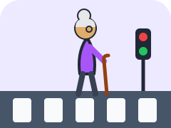
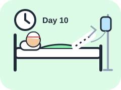
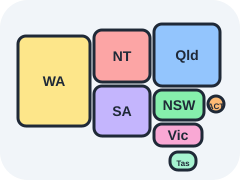

01
National trend
A decade of crashes, and the older share rising from 1 in 9 to 1 in 7.
COS30045 Data Visualisation · Group 11
Between 2011 and 2021, more than 410,000 people were admitted to hospital in Australia after a road crash. Most were young or middle aged. But the fastest growth came from people aged 65 and over, and they stay in hospital much longer.
Why this story
Australia's population is getting older, and older people are travelling more by bike, motorbike and car. When they are hurt, recovery takes longer. This site follows that change through eleven years of national hospital data.
… growth for ages 65 to 74, the fastest of any group
Yes. Ages 65 to 74 grew the fastest and 75+ also grew strongly, while the 17 to 25 group stayed almost flat.
… of all road crash hospitalisations were people aged 65+
Yes, from about 1 in 9 patients in 2011 to about 1 in 7 in 2021, with a peak in 2019.
… more older cyclists, mostly men, and stays about twice as long
…
Mostly, yes.
Australians aged 65+ grew by about 42% from 2011 to 2021 (ABS) and their road crash hospitalisations by 41%. The rate per older person stayed at about 126 per 100,000. The load on hospitals still grew, especially because older patients stay longer.
Six storylines
Each number means the same thing everywhere: chapter 03 in the story is tab 03 on the dashboard.

A decade of crashes, and the older share rising from 1 in 9 to 1 in 7.

Older cyclists tripled, motorcyclists more than doubled, mostly men.

Older patients stay about twice as long and use a quarter of bed days.

A much younger story: only 2% of First Nations patients were 65+.
Find people like you
Pick an age group, sex and how you get around. The numbers come straight from the national data.